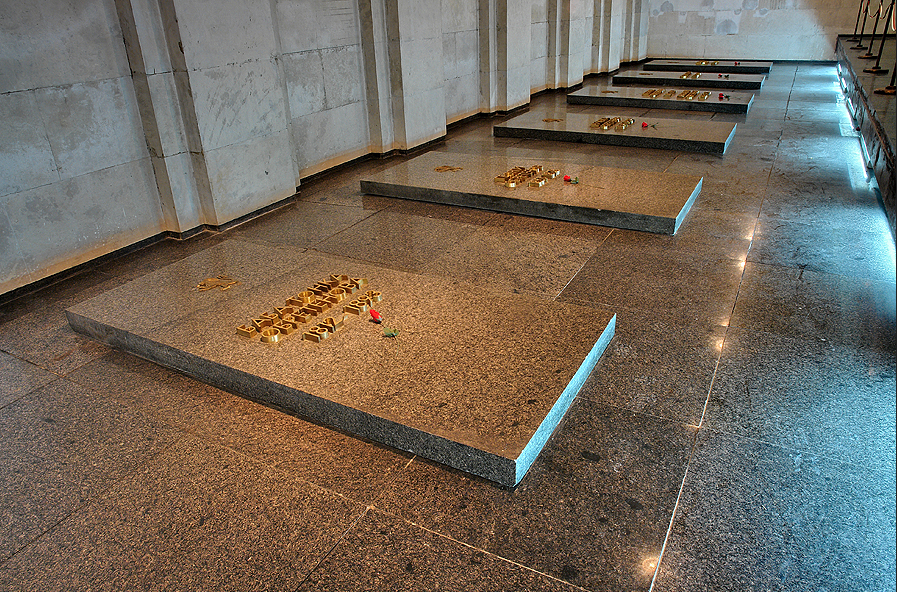
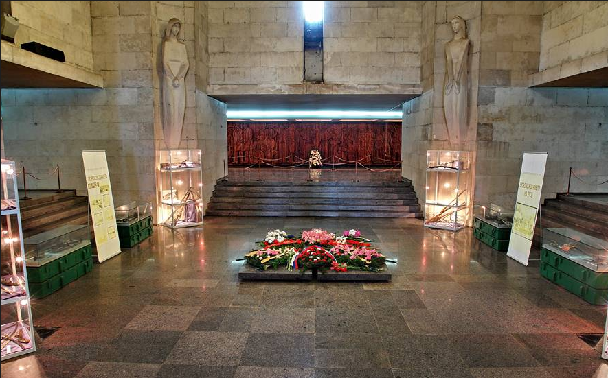

Русе град на свобония дух
Ние сме информационнен сайт предлагащ информация за забележителности и такси. От нас може да научите отговорите на всички въпроси свързани с града ни.

Пантеона
Пантеонът на възрожденците е национален паметник-костница намиращ се град Русе. Почетени са 453 души - участници в Ботевата чета, Червеноводската въстаническа чета, Априлското въстание и опълченците, чиито имена са изписани във вътрешността.
За повече информация
Паметника на свободата
Паметникът на Свободата в Русе е проектиран в началото на XX век от италианския скулптор Арналдо Дзоки, а е изработен от Георги Киселинчев. С течение на времето е придобил значение като един от символите на града и е част от герба му.
За повече информация

Доходно здание
Доходното здание е паметник на културата и е един от символите на града, редом с Паметника на Свободата. Фасадата на сградата е в стил неокласицизъм, украсена с пластични орнаменти и архитектурни детайли, характерни за края на 19 век.
За повече информация

Регионален исторически музей Русе
Русенският музей е основан през 1904 г. В основата му стоят археологическите сбирки на Карел и Херменгилд Шкорпил
За повече информация